CODING AGENTS AS PIXEL WORLD MODELS
traex/GPT-6.1-Sol · 0056
点击播放 · 原生 RGB 像素
此结果可播放，但该运行尚未通过最终提交审核。页面展示不代表评测通过。
逐轮保存的候选
回放视频、检查图与代码变化。
每份候选均可单独播放。实际图片检查记录在下方工具轨迹中。
候选 01播放与检查图
点击播放 · 原生 RGB 像素
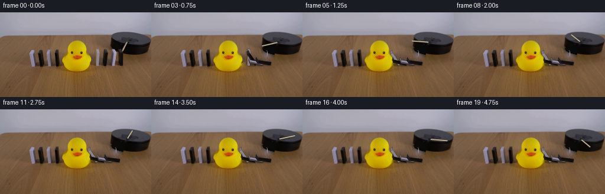
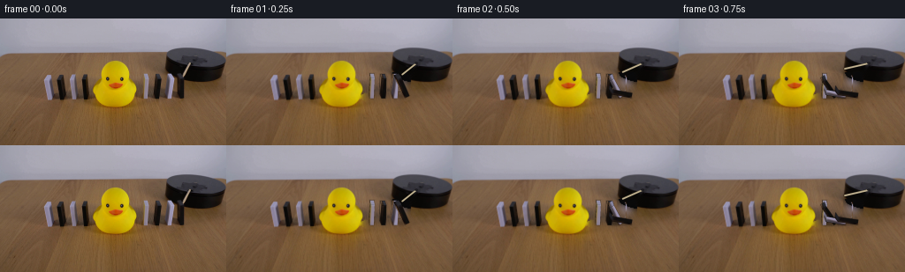
展开代码变化
--- 上一保存版本
+++ 本次保存版本
@@ -0,0 +1,183 @@
+from pathlib import Path
+import math
+import numpy as np
+import cv2
+from PIL import Image, ImageDraw, ImageFilter
+import artifact_io
+
+ROOT=Path(__file__).resolve().parent
+W,H=256,144
+S=4
+initial=np.array(Image.open(ROOT/'first_frame.png').convert('RGB'))
+
+# Upright blocks: the near bottom edge and the foreshortened tabletop depth.
+blocks=[
+ dict(x=202.2,y=90.0,w=5.6,h=22.4,dx=-3.5,dy=-4.9,lean=.15,white=False,start=.075,final=83),
+ dict(x=188.2,y=90.5,w=5.4,h=22.5,dx=-1.7,dy=-5.4,lean=1.0,white=True,start=.30,final=81),
+ dict(x=175.4,y=90.5,w=5.1,h=22.6,dx=-1.8,dy=-4.8,lean=.5,white=False,start=.52,final=78),
+ dict(x=162.2,y=90.6,w=4.6,h=23.5,dx=-.6,dy=-4.8,lean=1.0,white=True,start=.75,final=37),
+]
+
+def vertices(b,a):
+ # Rotation about the left bottom edge, constrained by successive neighbours.
+ c,s=math.cos(a),math.sin(a)
+ corners=[]
+ for depth in (0,1):
+ q=[]
+ for u,z in [(0,0),(b['w'],0),(b['w'],b['h']),(0,b['h'])]:
+ xx=b['x']+depth*b['dx']+u*c-z*s+b['lean']*(z/b['h'])*c
+ yy=b['y']+depth*b['dy']-u*s-z*c
+ # Table-plane perspective makes leftward motion very slightly recede.
+ yy += .011*(-z*s+u*(c-1))
+ q.append([xx,yy])
+ corners.append(np.array(q,np.float32))
+ f,r=corners
+ return {'front':f,'side':np.array([r[0],f[0],f[3],r[3]],np.float32),
+ 'top':np.array([r[3],f[3],f[2],r[2]],np.float32),
+ 'far':r,'bottom':np.array([r[0],f[0],f[1],r[1]],np.float32)}
+
+# Recover only the small regions previously hidden by the moving pieces.
+objmask=np.zeros((H,W),np.uint8)
+for b in blocks:
+ v=vertices(b,0)
+ pts=np.concatenate([v['front'],v['far']])
+ cv2.fillConvexPoly(objmask,cv2.convexHull(pts.astype(np.int32)),255)
+objmask=cv2.dilate(objmask,np.ones((3,3),np.uint8))
+rodmask=np.zeros_like(objmask)
+cv2.line(rodmask,(215,51),(207,65),255,3)
+rodmask=cv2.GaussianBlur(rodmask,(3,3),.45)
+rodmask=(rodmask>4).astype(np.uint8)*255
+mask=np.maximum(objmask,rodmask)
+# The initial contact shadows also leave with the dominoes.
+shadowmask=np.zeros_like(mask)
+cv2.ellipse(shadowmask,(180,89),(30,6),0,0,360,255,-1)
+shadowmask[:80]=0
+mask=np.maximum(mask,shadowmask)
+filled=cv2.inpaint(initial,mask,4,cv2.INPAINT_TELEA)
+
+Y,X=np.mgrid[:H,:W]
+# Exact silhouette of the original cylindrical platform (not a new object).
+platform=(X>=188)&(X<=255)&(Y>=45)&(Y<=61.0+11.6*np.sqrt(np.maximum(0,1-((X-222)/34.5)**2)))
+# Restore the dark side of the platform where an upright block concealed it.
+for y in range(54,74):
+ for x in range(186,256):
+ if mask[y,x] and platform[y,x]:
+ edge=(y-56)/17
+ val=11.0-2.5*edge+.4*math.sin(x*.27)
+ filled[y,x]=np.clip([val+.1,val,val+.5],0,255)
+# Wood grain from directly in front of the same location, retaining local lighting.
+soft=cv2.GaussianBlur(filled.astype(np.float32),(0,0),4)
+src=initial[np.minimum(Y+35,H-1),X].astype(np.float32)
+grain=src-cv2.GaussianBlur(src,(0,0),2)
+wood=np.clip(soft+grain*.75,0,255)
+region=(mask>0)&(~platform)&(X>153)
+filled[region]=wood[region].astype(np.uint8)
+# Feather removal along the old shadow footprint.
+shadowsoft=cv2.GaussianBlur(shadowmask.astype(np.float32)/255,(0,0),1.1)
+shadowsoft*=((~platform)&(X>154)&(objmask==0)&(rodmask==0))
+filled=(filled.astype(np.float32)*(1-shadowsoft[...,None]) + wood*shadowsoft[...,None]).astype(np.uint8)
+# The stick in front of the black base has a dark background, not tabletop.
+filled=cv2.inpaint(filled,rodmask,3,cv2.INPAINT_TELEA)
+Image.fromarray(filled).save(ROOT/'.tmp/clean.png')
+base=cv2.resize(filled,(W*S,H*S),interpolation=cv2.INTER_CUBIC).astype(np.float32)
+source=cv2.resize(initial,(W*S,H*S),interpolation=cv2.INTER_CUBIC).astype(np.float32)
+
+# Source faces retain the gentle photographic texture and edge softness.
+textures=[]
+for b in blocks:
+ v=vertices(b,0)
+ faces={}
+ for name in ['front','side','top']:
+ q=v[name]*S
+ unit=np.array([[0,63],[63,63],[63,0],[0,0]],np.float32)
+ mat=cv2.getPerspectiveTransform(q.astype(np.float32),unit)
+ patch=cv2.warpPerspective(source,mat,(64,64),flags=cv2.INTER_CUBIC)
+ # Lightly smooth the source interpolation, preserving face gradients.
+ faces[name]=cv2.GaussianBlur(patch,(0,0),1.0)
+ textures.append(faces)
+
+def paint_face(canvas,q,texture,gain=1):
+ q=(q*S).astype(np.float32)
+ unit=np.array([[0,63],[63,63],[63,0],[0,0]],np.float32)
+ mat=cv2.getPerspectiveTransform(unit,q)
+ tex=cv2.warpPerspective(np.clip(texture*gain,0,255),mat,(W*S,H*S),flags=cv2.INTER_LINEAR)
+ alpha=np.zeros((H*S,W*S),np.uint8)
+ cv2.fillConvexPoly(alpha,np.rint(q).astype(np.int32),255,lineType=cv2.LINE_AA)
+ a=cv2.GaussianBlur(alpha.astype(np.float32)/255,(0,0),.65)
+ canvas[:]=canvas*(1-a[...,None])+tex*a[...,None]
+
+def rotation(b,t):
+ dt=t-b['start']
+ if dt<=0:return 0
+ duration=.48 if b['final']>50 else .37
+ f=min(1,dt/duration)
+ # Acceleration from gravity, followed by a short damped contact response.
+ p=(1-math.cos(math.pi*f))/2
+ deg=b['final']*p
+ if dt>duration:
+ e=dt-duration
+ deg+=2.0*math.exp(-e*7)*math.sin(e*22)
+ return math.radians(deg)
+
+def shadow(canvas,poly,opacity,blur=1.3):
+ m=np.zeros((H*S,W*S),np.float32)
+ cv2.fillConvexPoly(m,np.round(np.array(poly)*S).astype(np.int32),1)
+ m=cv2.GaussianBlur(m,(0,0),blur*S)
+ canvas*=1-opacity*m[...,None]
+
+def draw_rod(canvas,t):
+ # The horizontal motor arm sweeps clockwise at constant angular velocity.
+ theta=math.radians(105.8+66*t)
+ pivot=np.array([215.1,50.7])
+ direction=np.array([30.2*math.cos(theta),15.1*math.sin(theta)])
+ tip=pivot+direction
+ # A thin soft shadow on the upper surface of the unchanged black platform.
+ overlay=np.zeros((H*S,W*S),np.float32)
+ p1=tuple(np.round((pivot+np.array([.7,1.0]))*S).astype(int))
+ p2=tuple(np.round((tip+np.array([.7,1.0]))*S).astype(int))
+ cv2.line(overlay,p1,p2,.3,2*S,cv2.LINE_AA)
+ overlay=cv2.GaussianBlur(overlay,(0,0),.7*S)
+ canvas*=1-overlay[...,None]*.35
+ # Cylindrical wood shading perpendicular to the projected shaft.
+ p1=tuple(np.round(pivot*S).astype(int));p2=tuple(np.round(tip*S).astype(int))
+ layer=np.zeros((H*S,W*S,3),np.float32);alpha=np.zeros((H*S,W*S),np.uint8)
+ cv2.line(alpha,p1,p2,255,2*S,cv2.LINE_AA)
+ cv2.line(layer,p1,p2,(120,107,84),2*S,cv2.LINE_AA)
+ cv2.line(layer,p1,p2,(180,164,130),int(1.3*S),cv2.LINE_AA)
+ norm=np.array([-direction[1],direction[0]])
+ norm=norm/(np.linalg.norm(norm)+1e-6)*.3
+ hp1=tuple(np.round((pivot-norm)*S).astype(int));hp2=tuple(np.round((tip-norm)*S).astype(int))
+ cv2.line(layer,hp1,hp2,(207,193,159),int(.55*S),cv2.LINE_AA)
+ a=cv2.GaussianBlur(alpha.astype(np.float32)/255,(0,0),.8)
+ layer=cv2.GaussianBlur(layer,(0,0),.45)
+ canvas[:]=canvas*(1-a[...,None])+layer*a[...,None]
+ # A small dark bearing covers the proximal end of the shaft.
+ cv2.ellipse(canvas,tuple((pivot*S).astype(int)),(int(2*S),int(1.25*S)),0,0,360,(30,29,33),-1,cv2.LINE_AA)
+
+frames=[initial.copy()]
+for i in range(1,20):
+ t=i/4
+ canvas=base.copy()
+ angles=[rotation(b,t) for b in blocks]
+ # Projected broad faces give natural contact shadows on the wood.
+ for b,a in zip(blocks,angles):
+ v=vertices(b,a)
+ f,r=v['front'],v['far']
+ height=b['h']*math.cos(a)
+ sh=[r[0]+[1.5,1],f[0]+[1.5,1],f[3]+[height*.12,height+1.0],r[3]+[height*.12,height+1.0]]
+ shadow(canvas,sh,.20,1.15 if a<1 else .75)
+ shadow(canvas,[r[0],f[0],f[1]+[.3,.5],r[1]+[.3,.5]],.13,.6)
+ draw_rod(canvas,t)
+ # Farther-left pieces first; each successor lands on the preceding fallen tile.
+ for idx in [3,2,1,0]:
+ b=blocks[idx];a=angles[idx];v=vertices(b,a)
+ sidegain=1+(.40 if b['white'] else .90)*math.sin(a)
+ topgain=1-.28*math.sin(a)
+ paint_face(canvas,v['side'],textures[idx]['side'],sidegain)
+ paint_face(canvas,v['front'],textures[idx]['front'],1.0)
+ paint_face(canvas,v['top'],textures[idx]['top'],topgain)
+ # The duck is a stable soft obstacle, and the domino chain cannot cross it.
+ rgb=cv2.resize(np.clip(canvas,0,255).astype(np.uint8),(W,H),interpolation=cv2.INTER_AREA)
+ frames.append(rgb)
+frames=np.stack(frames).astype(np.uint8)
+artifact_io.save(frames,ROOT)
候选 02播放与检查图
点击播放 · 原生 RGB 像素
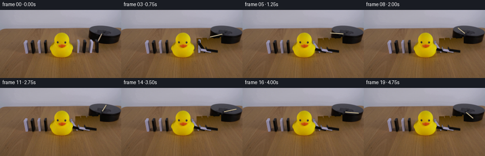
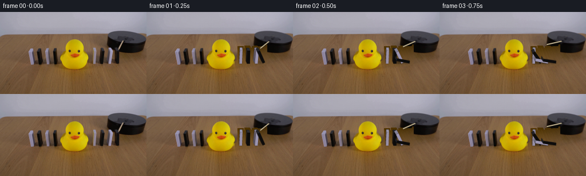
展开代码变化
--- 上一保存版本
+++ 本次保存版本
@@ -12,8 +12,8 @@
# Upright blocks: the near bottom edge and the foreshortened tabletop depth.
blocks=[
- dict(x=202.2,y=90.0,w=5.6,h=22.4,dx=-3.5,dy=-4.9,lean=.15,white=False,start=.075,final=83),
- dict(x=188.2,y=90.5,w=5.4,h=22.5,dx=-1.7,dy=-5.4,lean=1.0,white=True,start=.30,final=81),
+ dict(x=203.2,y=90.0,w=4.2,h=22.4,dx=-3.4,dy=-5.3,lean=.2,white=False,start=.075,final=83),
+ dict(x=189.2,y=90.5,w=5.0,h=22.5,dx=-2.9,dy=-5.4,lean=2.0,white=True,start=.30,final=81),
dict(x=175.4,y=90.5,w=5.1,h=22.6,dx=-1.8,dy=-4.8,lean=.5,white=False,start=.52,final=78),
dict(x=162.2,y=90.6,w=4.6,h=23.5,dx=-.6,dy=-4.8,lean=1.0,white=True,start=.75,final=37),
]
@@ -43,6 +43,13 @@
pts=np.concatenate([v['front'],v['far']])
cv2.fillConvexPoly(objmask,cv2.convexHull(pts.astype(np.int32)),255)
objmask=cv2.dilate(objmask,np.ones((3,3),np.uint8))
+# Include the softly focused outer silhouette rather than only its ideal geometry.
+for p in [[(198,61),(205,61),(209,67),(209,91),(201,92),(198,85)],
+ [(185,61),(192,60),(198,66),(198,92),(185,93)],
+ [(172,60),(179,60),(183,66),(183,93),(171,92)],
+ [(160,61),(168,61),(169,68),(169,93),(159,93)]]:
+ cv2.fillPoly(objmask,[np.array(p,np.int32)],255)
+objmask=cv2.dilate(objmask,np.ones((3,3),np.uint8))
rodmask=np.zeros_like(objmask)
cv2.line(rodmask,(215,51),(207,65),255,3)
rodmask=cv2.GaussianBlur(rodmask,(3,3),.45)
@@ -57,7 +64,10 @@
Y,X=np.mgrid[:H,:W]
# Exact silhouette of the original cylindrical platform (not a new object).
-platform=(X>=188)&(X<=255)&(Y>=45)&(Y<=61.0+11.6*np.sqrt(np.maximum(0,1-((X-222)/34.5)**2)))
+edge_x=np.array([187,188,190,194,198,203,210,221,232,240,247,251,254,256])
+edge_y=np.array([54,57,61,64,66,68,70,71.3,71.7,69.4,66,62,55,50])
+edge=np.interp(X,edge_x,edge_y)
+platform=(X>=187)&(Y>=45)&(Y<edge)
# Restore the dark side of the platform where an upright block concealed it.
for y in range(54,74):
for x in range(186,256):
@@ -66,7 +76,13 @@
val=11.0-2.5*edge+.4*math.sin(x*.27)
filled[y,x]=np.clip([val+.1,val,val+.5],0,255)
# Wood grain from directly in front of the same location, retaining local lighting.
-soft=cv2.GaussianBlur(filled.astype(np.float32),(0,0),4)
+xx=(X-190)/50; yy=(Y-95)/50
+features=np.stack([np.ones_like(xx),xx,yy,xx*yy,xx*xx,yy*yy],axis=-1)
+samples=(X>=154)&(X<=240)&(Y>=58)&(Y<=136)&(~platform)
+samples&=~((X<=213)&(Y<99))
+samples&=~((X>=212)&(Y<76))
+coeff=np.linalg.lstsq(features[samples],initial[samples].astype(np.float32),rcond=None)[0]
+soft=features@coeff
src=initial[np.minimum(Y+35,H-1),X].astype(np.float32)
grain=src-cv2.GaussianBlur(src,(0,0),2)
wood=np.clip(soft+grain*.75,0,255)
@@ -78,6 +94,14 @@
filled=(filled.astype(np.float32)*(1-shadowsoft[...,None]) + wood*shadowsoft[...,None]).astype(np.uint8)
# The stick in front of the black base has a dark background, not tabletop.
filled=cv2.inpaint(filled,rodmask,3,cv2.INPAINT_TELEA)
+# Feather the concealed curved boundary; the visible base is left untouched.
+edgeblend=np.clip(edge-Y+.25,0,1)
+for y in range(57,74):
+ for x in range(185,211):
+ if mask[y,x]:
+ a=edgeblend[y,x] if x>=187 else 0
+ col=np.array([10.5,9.3,8.4])
+ filled[y,x]=np.clip(col*a+wood[y,x]*(1-a),0,255)
Image.fromarray(filled).save(ROOT/'.tmp/clean.png')
base=cv2.resize(filled,(W*S,H*S),interpolation=cv2.INTER_CUBIC).astype(np.float32)
source=cv2.resize(initial,(W*S,H*S),interpolation=cv2.INTER_CUBIC).astype(np.float32)
@@ -92,6 +116,14 @@
unit=np.array([[0,63],[63,63],[63,0],[0,0]],np.float32)
mat=cv2.getPerspectiveTransform(q.astype(np.float32),unit)
patch=cv2.warpPerspective(source,mat,(64,64),flags=cv2.INTER_CUBIC)
+ patch=cv2.resize(patch[16:48,16:48],(64,64),interpolation=cv2.INTER_LINEAR)
+ # Edge pixels are mixed with the tabletop by the camera's point spread;
+ # do not bake these old outline colours into the rotating broad faces.
+ if b['white']:
+ nominal={'front':[157,150,177],'side':[101,94,109],'top':[156,151,174]}[name]
+ else:
+ nominal={'front':[12,11,11],'side':[18,16,17],'top':[39,39,44]}[name]
+ patch=patch*.32+np.array(nominal,dtype=np.float32)*.68
# Lightly smooth the source interpolation, preserving face gradients.
faces[name]=cv2.GaussianBlur(patch,(0,0),1.0)
textures.append(faces)
@@ -178,6 +210,11 @@
paint_face(canvas,v['top'],textures[idx]['top'],topgain)
# The duck is a stable soft obstacle, and the domino chain cannot cross it.
rgb=cv2.resize(np.clip(canvas,0,255).astype(np.uint8),(W,H),interpolation=cv2.INTER_AREA)
+ rgb[:31]=initial[:31]
+ rgb[99:]=initial[99:]
+ rgb[:,:143]=initial[:,:143]
+ duck=(X>=104)&(X<=155)&(Y>=47)&(Y<=102)&(initial[:,:,0]>170)&(initial[:,:,1]>130)&(initial[:,:,2]<80)
+ rgb[duck]=initial[duck]
frames.append(rgb)
frames=np.stack(frames).astype(np.uint8)
artifact_io.save(frames,ROOT)
候选 03播放与检查图
点击播放 · 原生 RGB 像素

展开代码变化
--- 上一保存版本 +++ 本次保存版本 @@ -85,7 +85,7 @@ soft=features@coeff src=initial[np.minimum(Y+35,H-1),X].astype(np.float32) grain=src-cv2.GaussianBlur(src,(0,0),2) -wood=np.clip(soft+grain*.75,0,255) +wood=np.clip(src+np.maximum(0,100-Y)[...,None]*np.array([.12,.10,.08]),0,255) region=(mask>0)&(~platform)&(X>153) filled[region]=wood[region].astype(np.uint8) # Feather removal along the old shadow footprint.
候选 04播放与检查图
候选 05播放与检查图
点击播放 · 原生 RGB 像素

展开代码变化
--- 上一保存版本
+++ 本次保存版本
@@ -72,8 +72,8 @@
for y in range(54,74):
for x in range(186,256):
if mask[y,x] and platform[y,x]:
- edge=(y-56)/17
- val=11.0-2.5*edge+.4*math.sin(x*.27)
+ shade=(y-56)/17
+ val=11.0-2.5*shade+.4*math.sin(x*.27)
filled[y,x]=np.clip([val+.1,val,val+.5],0,255)
# Wood grain from directly in front of the same location, retaining local lighting.
xx=(X-190)/50; yy=(Y-95)/50
候选 06播放与检查图
点击播放 · 原生 RGB 像素
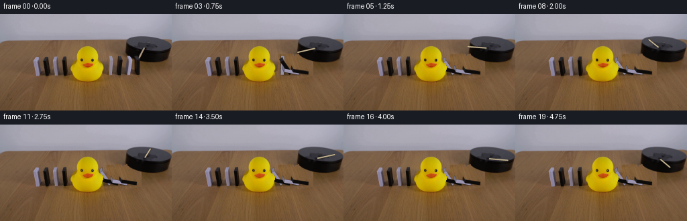
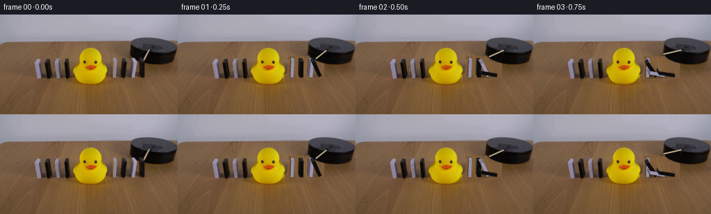
展开代码变化
--- 上一保存版本 +++ 本次保存版本 @@ -61,6 +61,7 @@ shadowmask[:80]=0 mask=np.maximum(mask,shadowmask) filled=cv2.inpaint(initial,mask,4,cv2.INPAINT_TELEA) +Image.fromarray(filled).resize((1024,576)).save(ROOT/'.tmp/raw_inpaint.png') Y,X=np.mgrid[:H,:W] # Exact silhouette of the original cylindrical platform (not a new object).
候选 07播放与检查图
点击播放 · 原生 RGB 像素

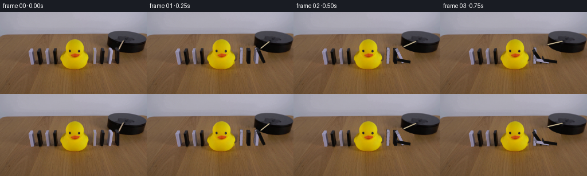
展开代码变化
--- 上一保存版本
+++ 本次保存版本
@@ -103,6 +103,13 @@
a=edgeblend[y,x] if x>=187 else 0
col=np.array([10.5,9.3,8.4])
filled[y,x]=np.clip(col*a+wood[y,x]*(1-a),0,255)
+# Gradient-domain texture fill blends the recovered table with its real edges.
+blendmask=np.zeros((H,W),np.uint8)
+blendmask[54:100,155:214]=255
+blendmask[platform]=0
+blendmask[(X<158)&(Y>70)&(Y<97)]=0
+bx,by,bw,bh=cv2.boundingRect(blendmask)
+filled=cv2.seamlessClone(wood.astype(np.uint8),filled,blendmask,(bx+bw//2,by+bh//2),cv2.NORMAL_CLONE)
Image.fromarray(filled).save(ROOT/'.tmp/clean.png')
base=cv2.resize(filled,(W*S,H*S),interpolation=cv2.INTER_CUBIC).astype(np.float32)
source=cv2.resize(initial,(W*S,H*S),interpolation=cv2.INTER_CUBIC).astype(np.float32)
可观测工具轨迹
实际执行的命令与返回图片。
命令 1exit 0
/bin/bash -lc "ls -la && cat prompt.txt && printf '\\n--- RULES ---\\n' && cat GENERATION_RULES.md"
命令 2exit 0
/bin/bash -lc "cat artifact_io.py && python - <<'PY'
from PIL import Image
im=Image.open('first_frame.png'); print(im.size); im.resize((1024,576)).save('.tmp/initial_large.png')
PY"命令 3exit 0
/bin/bash -lc "python - <<'PY'
from PIL import Image
im=Image.open('first_frame.png'); im.crop((150,28,256,102)).resize((848,592)).save('.tmp/right.png')
import importlib.util
for p in ['cv2','scipy','numpy','PIL']: print(p,bool(importlib.util.find_spec(p)))
PY"命令 4exit 0
/bin/bash -lc "python - <<'PY'
from PIL import Image
im=Image.open('first_frame.png'); im.crop((43,55,104,102)).resize((732,564)).save('.tmp/left.png')
PY"命令 5exit 0
/bin/bash -lc "python - <<'PY'
from PIL import Image,ImageDraw
im=Image.open('first_frame.png').resize((1536,864)); d=ImageDraw.Draw(im)
for x in range(155,215,5):
d.line([(x*6,55*6),(x*6,96*6)],fill=(255,0,0),width=1);d.text((x*6,96*6),str(x),fill='white')
for y in range(60,96,5):
d.line([(155*6,y*6),(215*6,y*6)],fill=(255,0,0),width=1);d.text((215*6,y*6),str(y),fill='white')
im.crop((150*6,54*6,229*6,103*6)).save('.tmp/grid.png')
PY"命令 6exit 0
/bin/bash -lc "python - <<'PY'
from PIL import Image
im=Image.open('first_frame.png'); im.crop((158,58,211,94)).resize((1060,720)).save('.tmp/tiles.png')
PY"命令 7exit 0
/bin/bash -lc "python - <<'PY'
from PIL import Image
im=Image.open('first_frame.png'); im.crop((184,30,256,77)).resize((1152,752)).save('.tmp/platform.png')
PY"命令 8exit 0
/bin/bash -lc "mkdir -p .tmp && cat > .tmp/bg_test.py <<'PY'
import cv2,numpy as np
from PIL import Image,ImageDraw
im=np.array(Image.open('first_frame.png'))
polys=[[(200,60),(205,61),(209,67),(208,91),(202,91),(199,85)],[(187,60),(192,61),(197,66),(195,92),(186,92),(185,84)],[(173,61),(179,61),(183,67),(181,92),(173,92),(172,84)],[(161,61),(167,61),(169,66),(167,92),(161,92)]]
m=np.zeros((144,256),np.uint8)
for p in polys:cv2.fillPoly(m,[np.array(p)],255)
cv2.line(m,(215,51),(207,66),255,4)
m=cv2.dilate(m,np.ones((3,3),np.uint8))
out=cv2.inpaint(im,m,3,cv2.INPAINT_TELEA)
Image.fromarray(out).save('.tmp/bg.png')
PY
python .tmp/bg_test.py"命令 9exit 0
/bin/bash -lc "cat > generate.py <<'PY'
from pathlib import Path
import math
import numpy as np
import cv2
from PIL import Image, ImageDraw, ImageFilter
import artifact_io
ROOT=Path(__file__).resolve().parent
W,H=256,144
S=4
initial=np.array(Image.open(ROOT/'first_frame.png').convert('RGB'))
# Upright blocks: the near bottom edge and the foreshortened tabletop depth.
blocks=[
dict(x=202.2,y=90.0,w=5.6,h=22.4,dx=-3.5,dy=-4.9,lean=.15,white=False,start=.075,final=83),
dict(x=188.2,y=90.5,w=5.4,h=22.5,dx=-1.7,dy=-5.4,lean=1.0,white=True,start=.30,final=81),
dict(x=175.4,y=90.5,w=5.1,h=22.6,dx=-1.8,dy=-4.8,lean=.5,white=False,start=.52,final=78),
dict(x=162.2,y=90.6,w=4.6,h=23.5,dx=-.6,dy=-4.8,lean=1.0,white=True,start=.75,final=37),
]
def vertices(b,a):
# Rotation about the left bottom edge, constrained by successive neighbours.
c,s=math.cos(a),math.sin(a)
corners=[]
for depth in (0,1):
q=[]
for u,z in [(0,0),(b['w'],0),(b['w'],b['h']),(0,b['h'])]:
xx=b['x']+depth*b['dx']+u*c-z*s+b['lean']*(z/b['h'])*c
yy=b['y']+depth*b['dy']-u*s-z*c
# Table-plane perspective makes leftward motion very slightly recede.
yy += .011*(-z*s+u*(c-1))
q.append([xx,yy])
corners.append(np.array(q,np.float32))
f,r=corners
return {'front':f,'side':np.array([r[0],f[0],f[3],r[3]],np.float32),
'top':np.array([r[3],f[3],f[2],r[2]],np.float32),
'far':r,'bottom':np.array([r[0],f[0],f[1],r[1]],np.float32)}
# Recover only the small regions previously hidden by the moving pieces.
objmask=np.zeros((H,W),np.uint8)
for b in blocks:
v=vertices(b,0)
pts=np.concatenate([v['front'],v['far']])
cv2.fillConvexPoly(objmask,cv2.convexHull(pts.astype(np.int32)),255)
objmask=cv2.dilate(objmask,np.ones((3,3),np.uint8))
rodmask=np.zeros_like(objmask)
cv2.line(rodmask,(215,51),(207,65),255,3)
rodmask=cv2.GaussianBlur(rodmask,(3,3),.45)
rodmask=(rodmask>4).astype(np.uint8)*255
mask=np.maximum(objmask,rodmask)
# The initial contact shadows also leave with the dominoes.
shadowmask=np.zeros_like(mask)
cv2.ellipse(shadowmask,(180,89),(30,6),0,0,360,255,-1)
shadowmask[:80]=0
mask=np.maximum(mask,shadowmask)
filled=cv2.inpaint(initial,mask,4,cv2.INPAINT_TELEA)
Y,X=np.mgrid[:H,:W]
# Exact silhouette of the original cylindrical platform (not a new object).
platform=(X>=188)&(X<=255)&(Y>=45)&(Y<=61.0+11.6*np.sqrt(np.maximum(0,1-((X-222)/34.5)**2)))
# Restore the dark side of the platform where an upright block concealed it.
for y in range(54,74):
for x in range(186,256):
if mask[y,x] and platform[y,x]:
edge=(y-56)/17
val=11.0-2.5*edge+.4*math.sin(x*.27)
filled[y,x]=np.clip([val+.1,val,val+.5],0,255)
# Wood grain from directly in front of the same location, retaining local lighting.
soft=cv2.GaussianBlur(filled.astype(np.float32),(0,0),4)
src=initial[np.minimum(Y+35,H-1),X].astype(np.float32)
grain=src-cv2.GaussianBlur(src,(0,0),2)
wood=np.clip(soft+grain*.75,0,255)
region=(mask>0)&(~platform)&(X>153)
filled[region]=wood[region].astype(np.uint8)
# Feather removal along the old shadow footprint.
shadowsoft=cv2.GaussianBlur(shadowmask.astype(np.float32)/255,(0,0),1.1)
shadowsoft*=((~platform)&(X>154)&(objmask==0)&(rodmask==0))
filled=(filled.astype(np.float32)*(1-shadowsoft[...,None]) + wood*shadowsoft[...,None]).astype(np.uint8)
# The stick in front of the black base has a dark background, not tabletop.
filled=cv2.inpaint(filled,rodmask,3,cv2.INPAINT_TELEA)
Image.fromarray(filled).save(ROOT/'.tmp/clean.png')
base=cv2.resize(filled,(W*S,H*S),interpolation=cv2.INTER_CUBIC).astype(np.float32)
source=cv2.resize(initial,(W*S,H*S),interpolation=cv2.INTER_CUBIC).astype(np.float32)
# Source faces retain the gentle photographic texture and edge softness.
textures=[]
for b in blocks:
v=vertices(b,0)
faces={}
for name in ['front','side','top']:
q=v[name]*S
unit=np.array([[0,63],[63,63],[63,0],[0,0]],np.float32)
mat=cv2.getPerspectiveTransform(q.astype(np.float32),unit)
patch=cv2.warpPerspective(source,mat,(64,64),flags=cv2.INTER_CUBIC)
# Lightly smooth the source interpolation, preserving face gradients.
faces[name]=cv2.GaussianBlur(patch,(0,0),1.0)
textures.append(faces)
def paint_face(canvas,q,texture,gain=1):
q=(q*S).astype(np.float32)
unit=np.array([[0,63],[63,63],[63,0],[0,0]],np.float32)
mat=cv2.getPerspectiveTransform(unit,q)
tex=cv2.warpPerspective(np.clip(texture*gain,0,255),mat,(W*S,H*S),flags=cv2.INTER_LINEAR)
alpha=np.zeros((H*S,W*S),np.uint8)
cv2.fillConvexPoly(alpha,np.rint(q).astype(np.int32),255,lineType=cv2.LINE_AA)
a=cv2.GaussianBlur(alpha.astype(np.float32)/255,(0,0),.65)
canvas[:]=canvas*(1-a[...,None])+tex*a[...,None]
def rotation(b,t):
dt=t-b['start']
if dt<=0:return 0
duration=.48 if b['final']>50 else .37
f=min(1,dt/duration)
# Acceleration from gravity, followed by a short damped contact response.
p=(1-math.cos(math.pi*f))/2
deg=b['final']*p
if dt>duration:
e=dt-duration
deg+=2.0*math.exp(-e*7)*math.sin(e*22)
return math.radians(deg)
def shadow(canvas,poly,opacity,blur=1.3):
m=np.zeros((H*S,W*S),np.float32)
cv2.fillConvexPoly(m,np.round(np.array(poly)*S).astype(np.int32),1)
m=cv2.GaussianBlur(m,(0,0),blur*S)
canvas*=1-opacity*m[...,None]
def draw_rod(canvas,t):
# The horizontal motor arm sweeps clockwise at constant angular velocity.
theta=math.radians(105.8+66*t)
pivot=np.array([215.1,50.7])
direction=np.array([30.2*math.cos(theta),15.1*math.sin(theta)])
tip=pivot+direction
# A thin soft shadow on the upper surface of the unchanged black platform.
overlay=np.zeros((H*S,W*S),np.float32)
p1=tuple(np.round((pivot+np.array([.7,1.0]))*S).astype(int))
p2=tuple(np.round((tip+np.array([.7,1.0]))*S).astype(int))
cv2.line(overlay,p1,p2,.3,2*S,cv2.LINE_AA)
overlay=cv2.GaussianBlur(overlay,(0,0),.7*S)
canvas*=1-overlay[...,None]*.35
# Cylindrical wood shading perpendicular to the projected shaft.
p1=tuple(np.round(pivot*S).astype(int));p2=tuple(np.round(tip*S).astype(int))
layer=np.zeros((H*S,W*S,3),np.float32);alpha=np.zeros((H*S,W*S),np.uint8)
cv2.line(alpha,p1,p2,255,2*S,cv2.LINE_AA)
cv2.line(layer,p1,p2,(120,107,84),2*S,cv2.LINE_AA)
cv2.line(layer,p1,p2,(180,164,130),int(1.3*S),cv2.LINE_AA)
norm=np.array([-direction[1],direction[0]])
norm=norm/(np.linalg.norm(norm)+1e-6)*.3
hp1=tuple(np.round((pivot-norm)*S).astype(int));hp2=tuple(np.round((tip-norm)*S).astype(int))
cv2.line(layer,hp1,hp2,(207,193,159),int(.55*S),cv2.LINE_AA)
a=cv2.GaussianBlur(alpha.astype(np.float32)/255,(0,0),.8)
layer=cv2.GaussianBlur(layer,(0,0),.45)
canvas[:]=canvas*(1-a[...,None])+layer*a[...,None]
# A small dark bearing covers the proximal end of the shaft.
cv2.ellipse(canvas,tuple((pivot*S).astype(int)),(int(2*S),int(1.25*S)),0,0,360,(30,29,33),-1,cv2.LINE_AA)
frames=[initial.copy()]
for i in range(1,20):
t=i/4
canvas=base.copy()
angles=[rotation(b,t) for b in blocks]
# Projected broad faces give natural contact shadows on the wood.
for b,a in zip(blocks,angles):
v=vertices(b,a)
f,r=v['front'],v['far']
height=b['h']*math.cos(a)
sh=[r[0]+[1.5,1],f[0]+[1.5,1],f[3]+[height*.12,height+1.0],r[3]+[height*.12,height+1.0]]
shadow(canvas,sh,.20,1.15 if a<1 else .75)
shadow(canvas,[r[0],f[0],f[1]+[.3,.5],r[1]+[.3,.5]],.13,.6)
draw_rod(canvas,t)
# Farther-left pieces first; each successor lands on the preceding fallen tile.
for idx in [3,2,1,0]:
b=blocks[idx];a=angles[idx];v=vertices(b,a)
sidegain=1+(.40 if b['white'] else .90)*math.sin(a)
topgain=1-.28*math.sin(a)
paint_face(canvas,v['side'],textures[idx]['side'],sidegain)
paint_face(canvas,v['front'],textures[idx]['front'],1.0)
paint_face(canvas,v['top'],textures[idx]['top'],topgain)
# The duck is a stable soft obstacle, and the domino chain cannot cross it.
rgb=cv2.resize(np.clip(canvas,0,255).astype(np.uint8),(W,H),interpolation=cv2.INTER_AREA)
frames.append(rgb)
frames=np.stack(frames).astype(np.uint8)
artifact_io.save(frames,ROOT)
PY
python generate.py"命令 10exit 0
/bin/bash -lc "python - <<'PY'
from PIL import Image
for n in [1,3,5]:
im=Image.open('frames/%02d.png'%n);im.resize((1024,576)).save('.tmp/f%d.png'%n)
Image.open('.tmp/clean.png').resize((1024,576)).save('.tmp/clean_large.png')
PY"命令 11exit 0
/bin/bash -lc "python - <<'PY'
from PIL import Image
import numpy as np
im=np.array(Image.open('first_frame.png'))
for x in [187,188,189,190,194,195,196,197,198,199,200,209,210,212,215,220,225,240,250,255]:
print(x,[(y,im[y,x].tolist()) for y in range(58,75,2)])
PY"命令 12exit 0
/bin/bash -lc "python generate.py && python - <<'PY'
from PIL import Image
Image.open('.tmp/clean.png').resize((1024,576)).save('.tmp/clean_large.png')
Image.open('frames/05.png').resize((1024,576)).save('.tmp/f5.png')
Image.open('frames/01.png').resize((1024,576)).save('.tmp/f1.png')
PY"命令 13exit 0
/bin/bash -lc "python - <<'PY'
p='generate.py'
s=open(p).read();s=s.replace('wood=np.clip(soft+grain*.75,0,255)','wood=np.clip(src+np.maximum(0,100-Y)[...,None]*np.array([.12,.10,.08]),0,255)')
# blur mask edge, rather than visible polygons at start
s=s.replace(\"filled=cv2.inpaint(filled,rodmask,3,cv2.INPAINT_TELEA)\\n# Feather\", \"filled=cv2.inpaint(filled,rodmask,3,cv2.INPAINT_TELEA)\\n# Feather\")
# grain from y35 okay
open(p,'w').write(s)
PY
python generate.py && python - <<'PY'
from PIL import Image
Image.open('.tmp/clean.png').resize((1024,576)).save('.tmp/clean_large.png')
PY"命令 14exit 0
/bin/bash -lc "python - <<'PY'
from PIL import Image
import numpy as np
im=np.array(Image.open('.tmp/clean.png'))
for x in [188,190,195,200,205,209,210,211,212]:print(x,[(y,im[y,x].tolist()) for y in [58,60,62,64,66,68,70]])
PY"命令 15exit 0
/bin/bash -lc "python - <<'PY'
p='generate.py';s=open(p).read().replace('edge=(y-56)/17\\n val=11.0-2.5*edge','shade=(y-56)/17\\n val=11.0-2.5*shade')
open(p,'w').write(s)
PY
python generate.py && python - <<'PY'
from PIL import Image
Image.open('.tmp/clean.png').resize((1024,576)).save('.tmp/clean_large.png')
Image.open('frames/05.png').resize((1024,576)).save('.tmp/f5.png')
PY"命令 16exit 0
/bin/bash -lc "python - <<'PY'
p='generate.py';s=open(p).read();s=s.replace('filled=cv2.inpaint(initial,mask,4,cv2.INPAINT_TELEA)','filled=cv2.inpaint(initial,mask,4,cv2.INPAINT_TELEA)\\nImage.fromarray(filled).resize((1024,576)).save(ROOT/\\'.tmp/raw_inpaint.png\\')')
open(p,'w').write(s)
PY
python generate.py"命令 17exit 0
/bin/bash -lc "python - <<'PY'
p='generate.py';s=open(p).read();needle=\"Image.fromarray(filled).save(ROOT/'.tmp/clean.png')\"
repl=\"\"\"# Gradient-domain texture fill blends the recovered table with its real edges.
blendmask=np.zeros((H,W),np.uint8)
blendmask[54:100,155:214]=255
blendmask[platform]=0
blendmask[(X<158)&(Y>70)&(Y<97)]=0
bx,by,bw,bh=cv2.boundingRect(blendmask)
filled=cv2.seamlessClone(wood.astype(np.uint8),filled,blendmask,(bx+bw//2,by+bh//2),cv2.NORMAL_CLONE)
Image.fromarray(filled).save(ROOT/'.tmp/clean.png')\"\"\"
s=s.replace(needle,repl);open(p,'w').write(s)
PY
python generate.py && python - <<'PY'
from PIL import Image
Image.open('.tmp/clean.png').resize((1024,576)).save('.tmp/clean_large.png')
PY"命令 18exit 1
/bin/bash -lc "python - <<'PY'
import numpy as np
from PIL import Image
from pathlib import Path
p=np.load('pixels.npz')['pixels'];a=np.array(Image.open('first_frame.png').convert('RGB'))
f=p[:,:,0];b=np.stack([(f>>16)&255,(f>>8)&255,f&255],-1).astype(np.uint8)
assert np.array_equal(a,b)
assert p.shape==(144,256,20)
print('Validated 20 RGB frames at 256x144; frame 00 is pixel-identical.')
PY
command -v ffmpeg"视觉工具实际返回图片 1
视觉工具实际返回图片 2
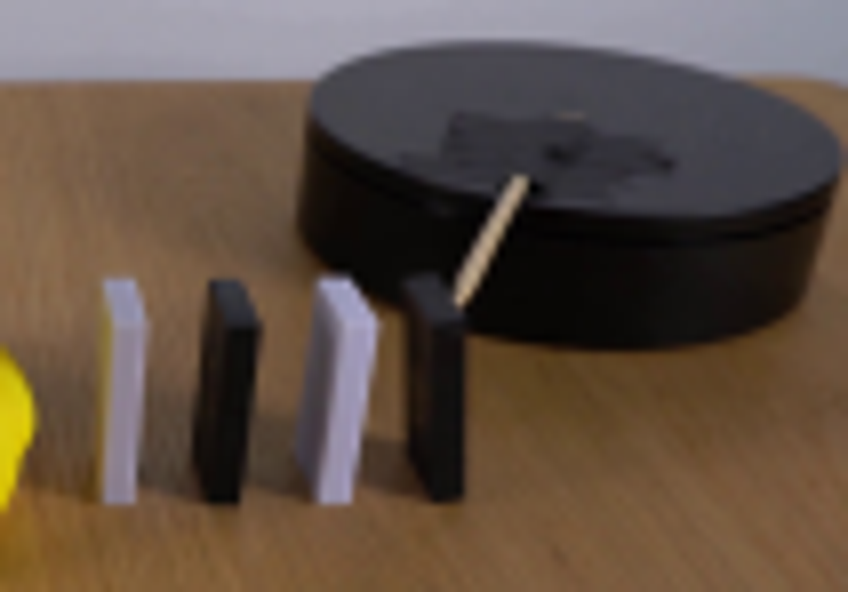
视觉工具实际返回图片 3
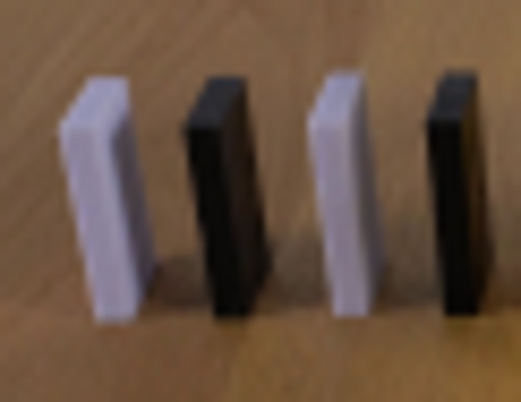
视觉工具实际返回图片 4
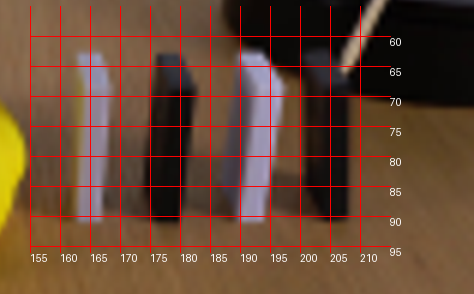
视觉工具实际返回图片 5
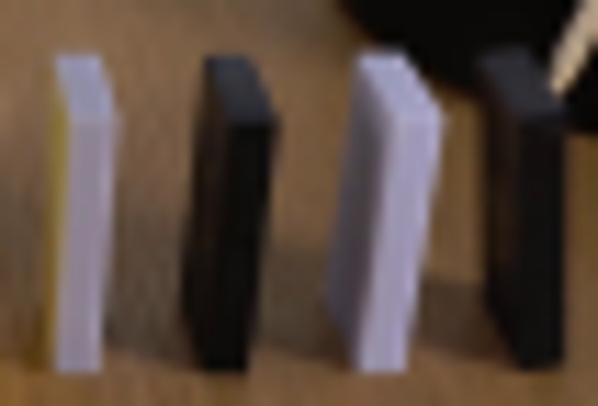
视觉工具实际返回图片 6
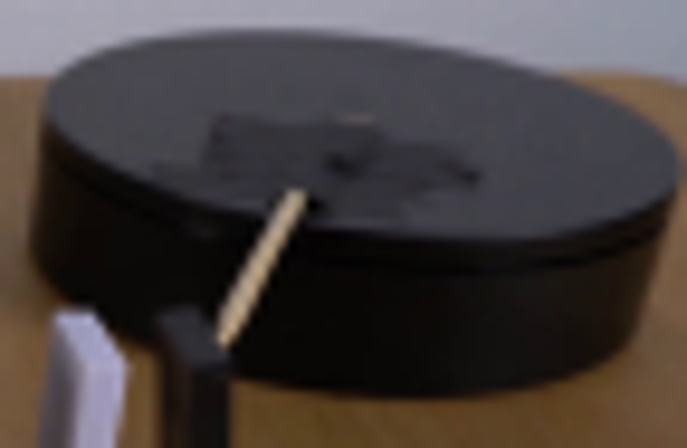
视觉工具实际返回图片 7
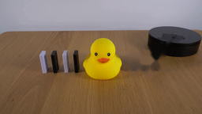
视觉工具实际返回图片 8

视觉工具实际返回图片 9
视觉工具实际返回图片 10
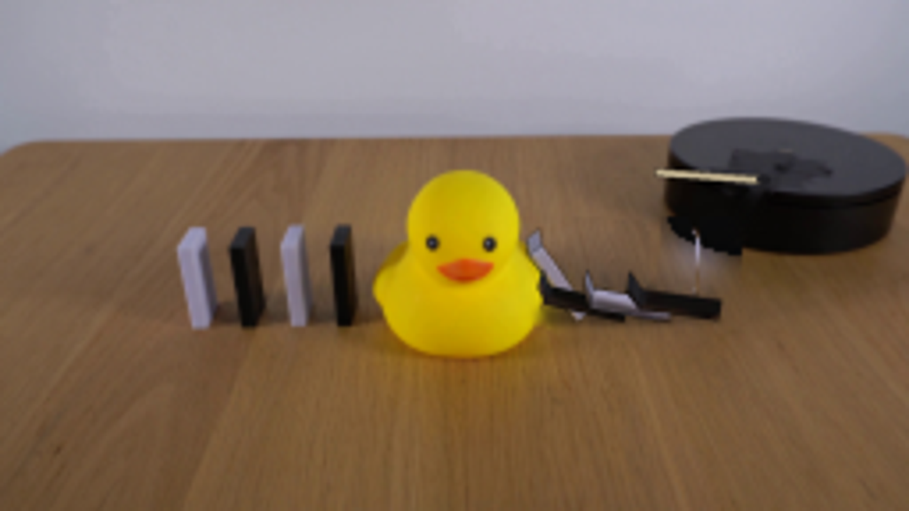
视觉工具实际返回图片 11
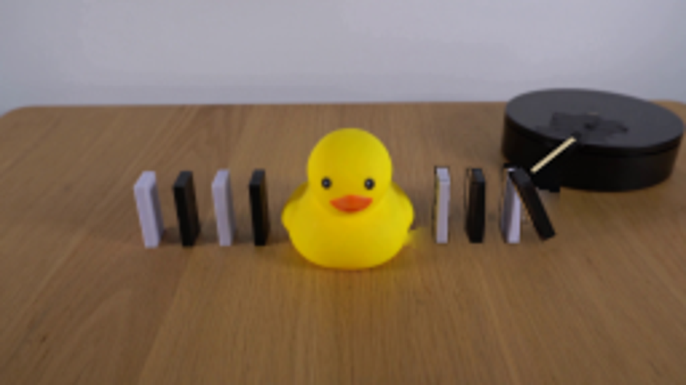
视觉工具实际返回图片 12
视觉工具实际返回图片 13
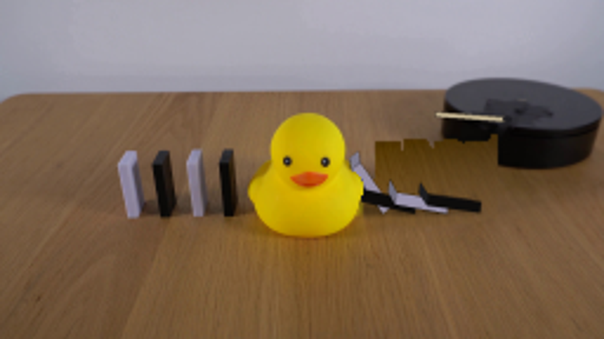
视觉工具实际返回图片 14
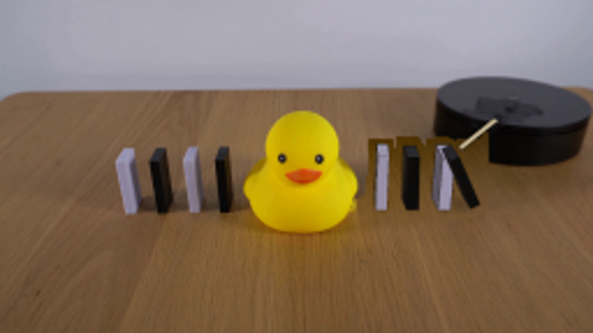
视觉工具实际返回图片 15
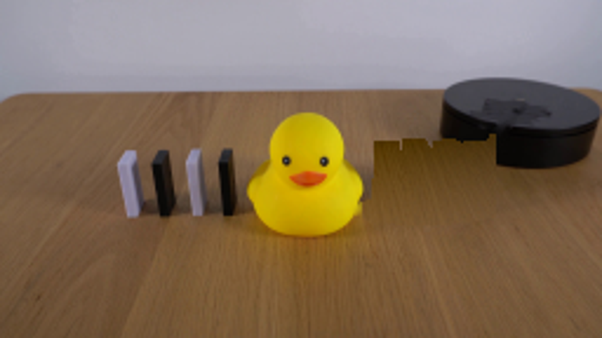
视觉工具实际返回图片 16
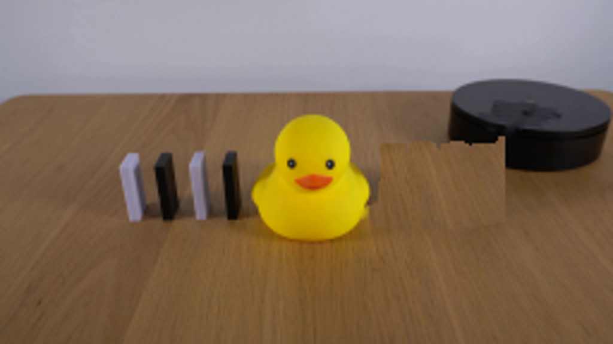
视觉工具实际返回图片 17
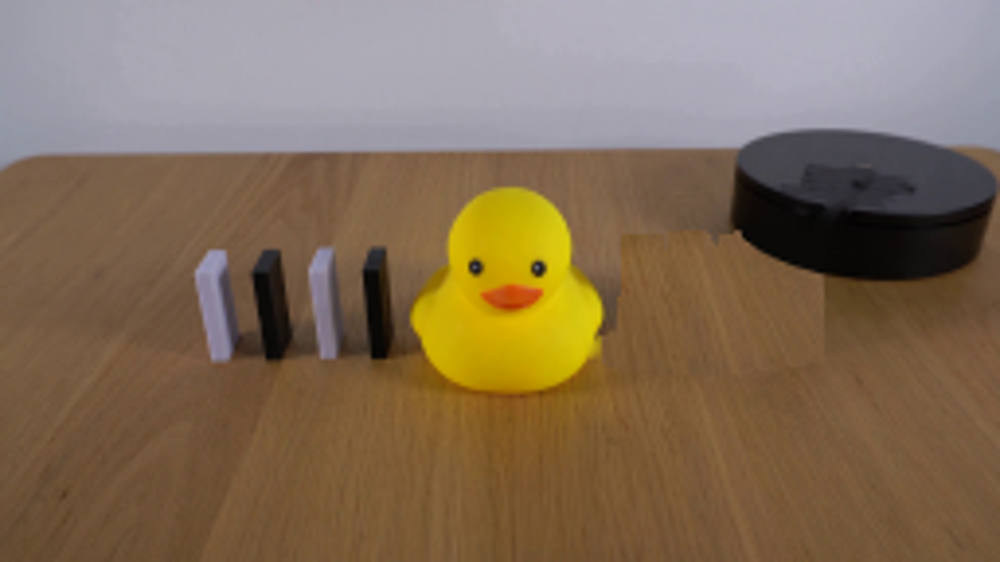
视觉工具实际返回图片 18
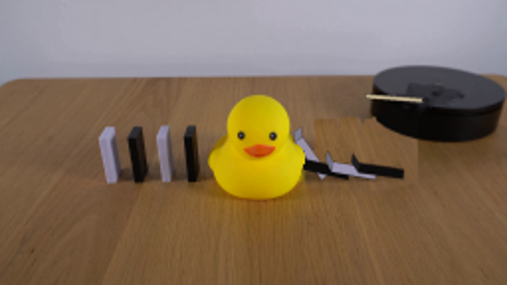
视觉工具实际返回图片 19
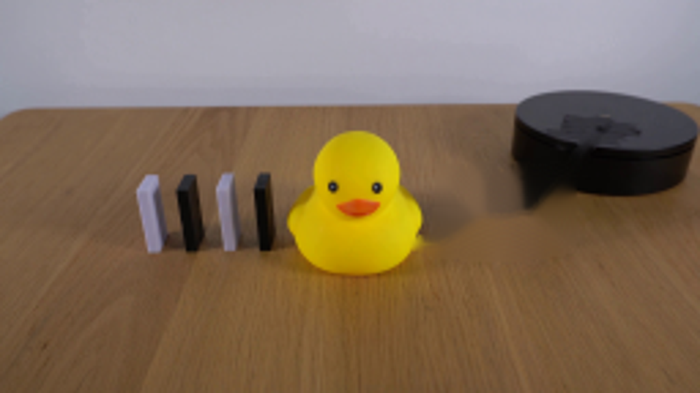
视觉工具实际返回图片 20
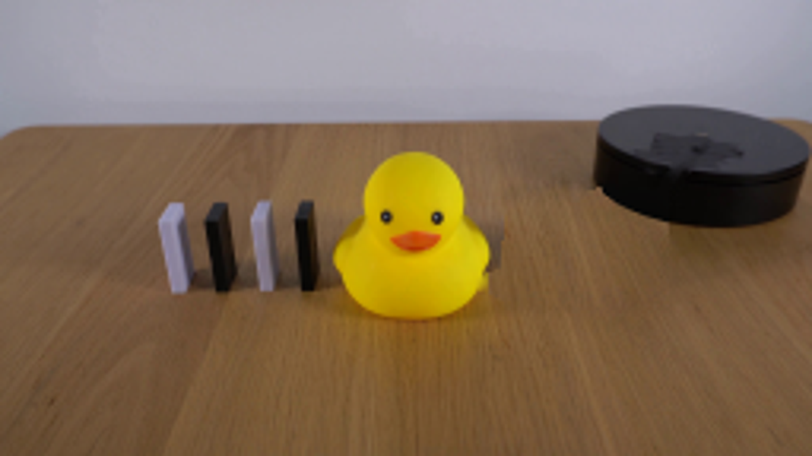
视觉工具实际返回图片 21
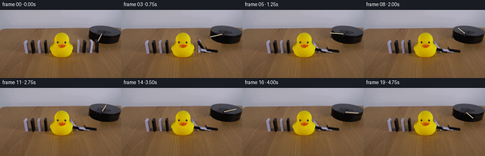
保存候选 7 份；完成命令 18 次；可验证图片返回 21 张。原始 API 响应与完整日志保留在本地。